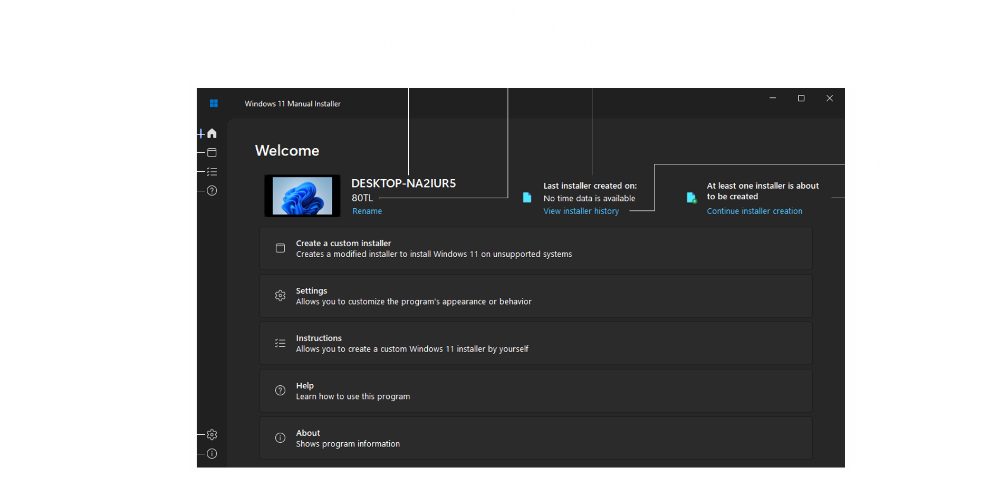
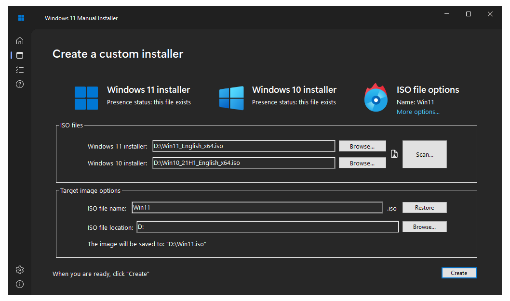
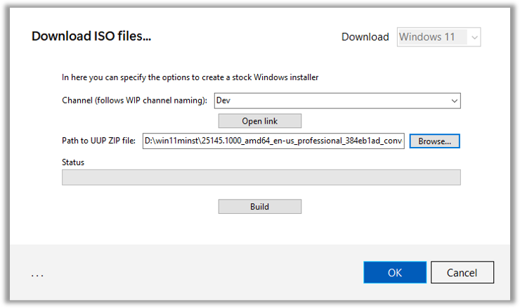
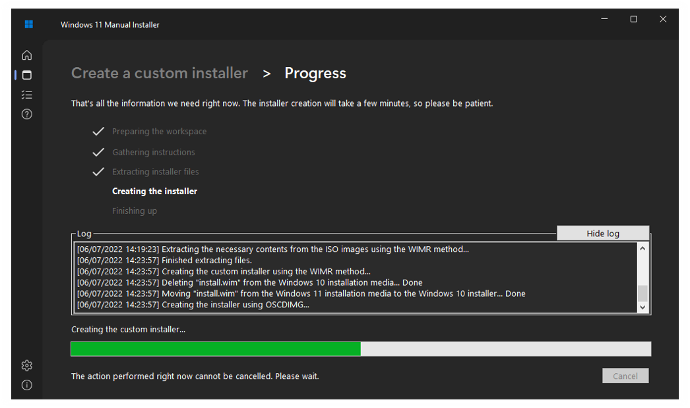
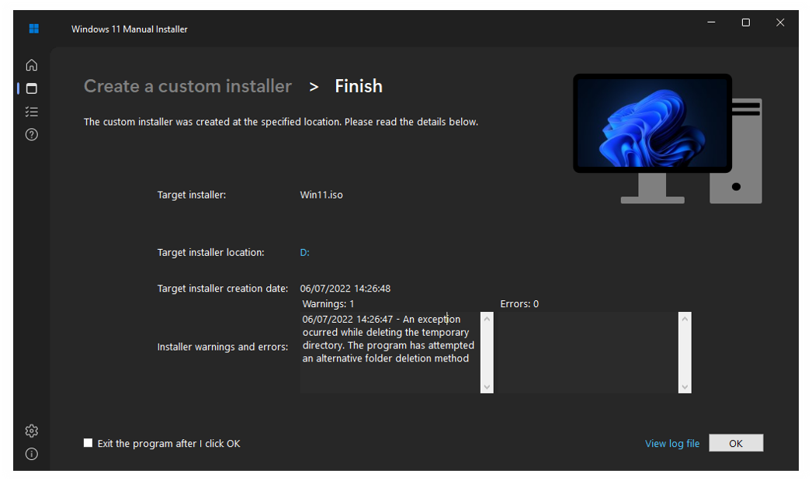
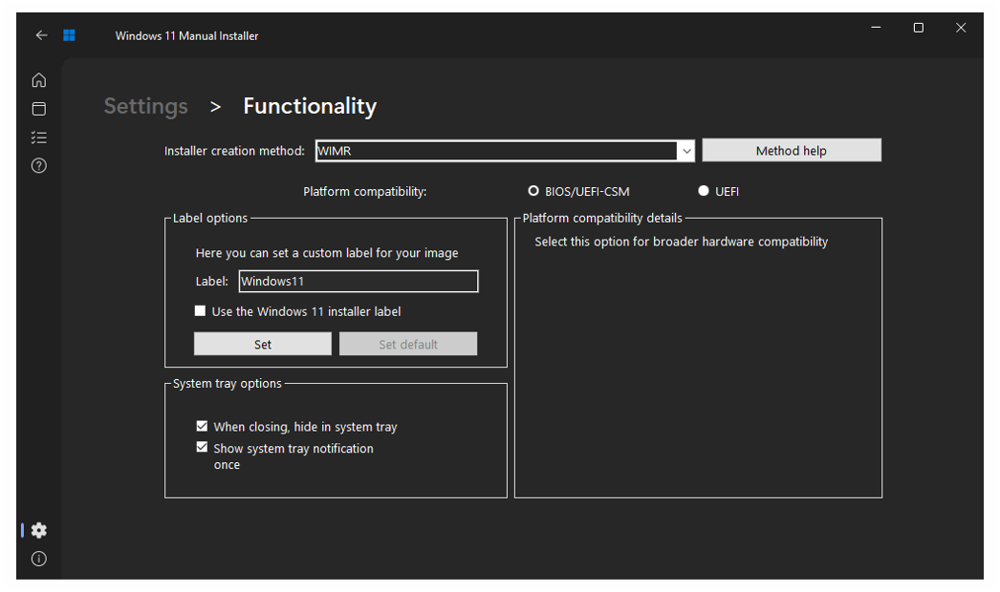
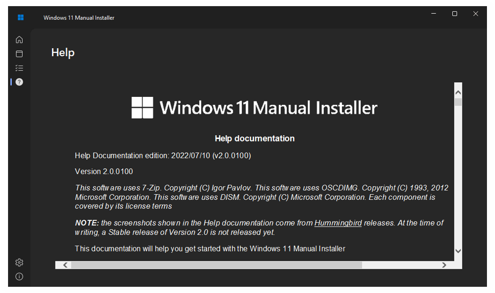
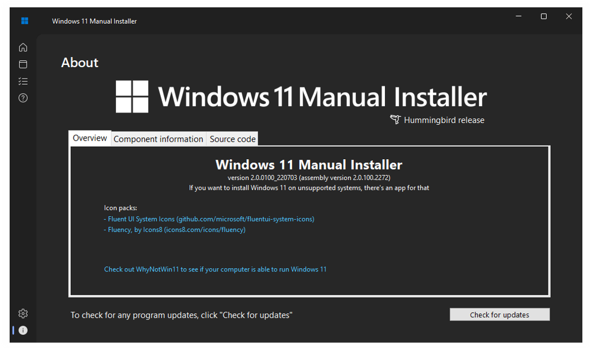
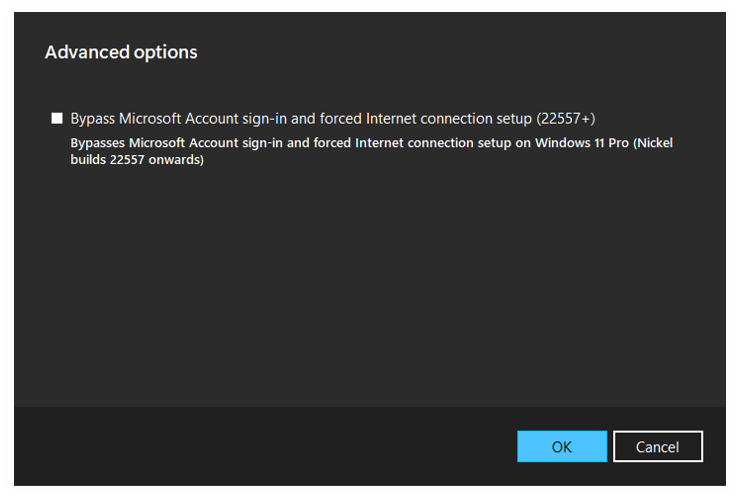
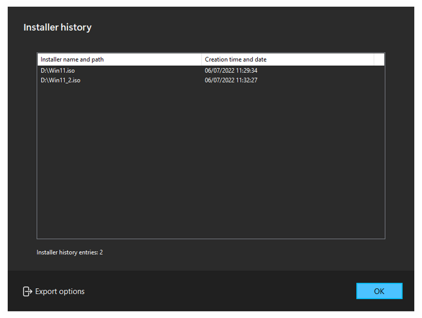

Edition de la documentation d'aide : 2022/07/31 (v2.0.0100)
Version 2.0.0100
Ce logiciel utilise 7-Zip. Copyright (C) Igor Pavlov. Ce logiciel utilise OSCDIMG. Copyright (C) 1993, 2012 Microsoft Corporation. Ce logiciel utilise DISM. Copyright (C) Microsoft Corporation. Chaque composant est couvert par les termes de sa licence
Cette documentation vous aidera à démarrer avec l'Installateur manuel de Windows 11.
L'interface principale a subi un lifting dans la version 2.0. Lorsque le programme est lancé, vous êtes accueilli par le menu principal, qui affiche désormais le nom de l'ordinateur, le modèle, l'heure de la dernière création de l'installateur, l'historique de l'installateur et la possibilité de poursuivre la création de l'installateur.
Pour passer d'une option à l'autre (appelées "panneaux"), il faut utiliser les images du panneau latéral. Dans l'image ci-dessus, vous pouvez voir une description de chaque image. Vous pouvez également les survoler pour afficher une description, comme indiqué ci-dessous :

La création de l'installateur est la prémisse du programme (et la première option que vous verrez dans le menu principal). Elle aussi a été remaniée par rapport aux versions 1.0. Sur cet écran, vous devez spécifier une image ISO de Windows 11 et une image ISO de Windows 10. Ensuite, vous devez spécifier le nom et le chemin d'accès du programme d'installation cible.
La version 2.0 vous permet de rechercher des fichiers ISO dans un répertoire et de télécharger des images d'installation de Windows à partir du site Web de Microsoft. (et aussi les construire à partir de fichiers téléchargés depuis UUP Dump (uupdump.net), si les privilèges administratifs sont présents)
|
|
|
 |
En cliquant sur "Options supplémentaires...", vous accédez aux paramètres de fonctionnalité, qui sont mentionnés plus loin dans la documentation. Après avoir spécifié les options de l'installateur source et de l'installateur cible, cliquez sur "Créer". Le programme vous demandera de confirmer vos paramètres.

Si vous confirmez, la création de l'installateur aura lieu. Dans la version 2.0, l'écran du processus de création de l'installateur ne se trouve plus dans une fenêtre séparée, mais dans la fenêtre principale. Cependant, le processus est le même.
L'un des changements de la version 2.0 est la possibilité d'afficher ou de masquer le journal de création de l'installateur, et le programme ne se fige plus lors de la création de l'installateur. Le programme affiche également des informations plus détaillées à la fin du processus.
Il y a maintenant un raccourci pour ouvrir le fichier journal, et vous pouvez maintenant quitter le programme en cliquant sur ''OK''
Le programme suit la philosophie suivante : ''Simple par défaut, mais puissant quand il le faut'', ce qui signifie que vous pouvez le configurer comme vous le souhaitez. Contrairement à la version 1.0.013x, les paramètres de cette version se trouvent dans différentes sections.

Les paramètres de personnalisation consistent à :
 |
 |

|
Les paramètres de fonctionnalité sont les suivants :
Vous pouvez également accéder à ces paramètres en cliquant sur "Options supplémentaires..." sur l'écran de création de l'installateur
Cet écran montre des instructions sur la façon de créer un installateur personnalisé de Windows 11 par vous-même, tout en essayant d'être aussi utile que possible.
Cet écran affiche la documentation d'aide (ce que vous lisez en ce moment)
Affiche des informations sur le programme, comme les versions du produit et de l'assemblage, les sources des icônes, les versions des composants et l'endroit où se trouve le code source
Le panneau des options avancées vous permet de définir des options supplémentaires pour la méthode de création de l'installateur REGTWEAK. Cela peut être utile si vous voulez éviter de vous connecter avec un compte Microsoft sous Windows 11 Pro. Cependant, cette option est facultative et n'est visible UNIQUEMENT que si le programme est exécuté avec des privilèges d'administrateur.
L'historique des installateurs vous permet de voir les installateurs que vous avez créés récemment, et de les exporter vers un fichier XML, HTML ou CSV.
La version 2.0 vous permet de télécharger les fichiers ISO de Windows 11 et 10 depuis le site web de Microsoft. Si les privilèges administratifs sont présents, le programme vous permet également de construire les images avec les fichiers téléchargés depuis UUP Dump (uupdump.net)